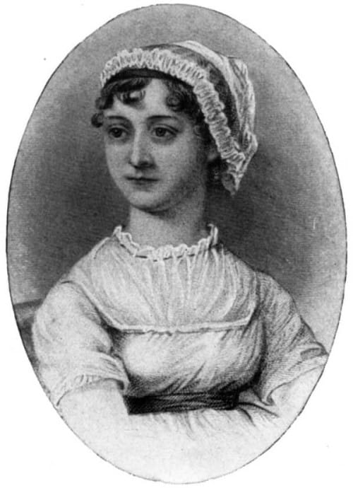

Jane Austen sinh ngày 16 tháng 12 năm 1775 tại Steventon, Hants, Anh quốc, và là người thứ bảy trong tám người con của Mục sư George Austen (1731 - 1805), cai quản giáo xứ Steventon, và bà Cassandra Leigh (1739 - 1827). Người thân thiết nhất trong cuộc đời tác giả là cô chị Cassandra; cả hai không bao giờ kết hôn. Ông bố là một học giả luôn khuyến khích con cái tính ham học hỏi. Tuy thế, tác giả không được tiếp thu nhiều giáo dục từ nhà trường mà chủ yếu được ông bố dạy học, và cũng có điều kiện đọc nhiều sách vở. Không khí gia đình sống động và yêu thương, cộng thêm những mối quan hệ rộng rãi với họ hàng và bạn hữu, đã cung cấp bối cảnh cho các tác phẩm của tác giả.

(1775 - 1817)
Từ tuổi nhỏ, Jane Austen đã bắt đầu viết những vở kịch ngắn và tiểu phẩm nhằm tạo vui thú trong gia đình, tiếp theo là một ít thơ và văn xuôi. Tác giả đã sử dụng khung cảnh đời sống của mình - vùng nông thôn, giáo xứ, láng giềng và những thị trấn miền quê, cùng những chuyến thăm viếng đến các thành phố Bath và London để lấy chất liệu cho những tình huống, cá tính và đề tài trong các tác phẩm của mình.
Tác phẩm Lý trí và Tình cảm (Sense and Sensibility) được viết vào năm 1784 dưới tựa đề Elinor và Marianne, qua nhiều bổ sung đến năm 1811 mới được xuất bản, chỉ ghi tác giả là “một phụ nữ”, và với chi phí tác giả tự bỏ ra. Tương tự, truyện Kiêu hãnh và Định kiến (Pride and Prejudice) được phác thảo trong thời gian 1796 - 1797 và xuất bản lần đầu tiên năm 1813. Thêm truyện Mansfield Park được xuất bản năm 1814, và Emma năm 1815. (Bản dịch của Price and Prejudice và Emma đã được Nhà xuất bản Hội Nhà văn phát hành cùng với bản dịch này) Một nhà phê bình văn học có uy tín đã ca ngợi “tác giả không tên” là ngòi bút tuyệt diệu của “tiểu thuyết hiện đại” trong truyền thống mới về hiện thực. Tất cả tác phẩm xuất bản lúc Jane Austen còn sống vẫn đề tên tác giả vô danh. Sau khi tác giả qua đời, lần đầu tiên tên thật của tác giả mới xuất hiện năm 1817, trên truyện Persuasion.
Sống với gia đình của mình trong suốt cuộc đời, tác giả chớm căn bệnh Addison (thoái hóa tuyến thượng thận) vào năm 1816 và qua đời ngày 18 tháng 7 năm 1817, chỉ hưởng thọ 42 tuổi.
Tuy được một số nhà phê bình văn học đương thời tán thưởng, tác giả chỉ được công chúng chú ý chút ít khi còn sống. Khoảng ba thập kỷ sau khi tác giả qua đời, công luận thế giới bắt đầu có những nhận xét nghiêm túc và nồng nhiệt hơn, và từ bấy giờ đến nay Jane Austen đều được đánh giá như là một trong những tác giả tiểu thuyết đặc sắc nhất của nền văn học Anh. Nhiều câu lạc bộ của những người yêu thích Jane Austen đã được thành lập ở Argentina, Úc, Nhật, Mỹ… và dĩ nhiên là ở Anh quốc.
Jane Austen được xem là nhà văn đã mang đến cho nền tiểu thuyết tính cách hiện đại độc đáo qua văn phong hài hước để phê phán thói hư tật xấu trong đời thường. Các nhà phê bình văn học ca ngợi tiểu thuyết của tác giả về giá trị đạo đức lẫn tính chất giải trí; họ cũng yêu mến việc tả chân cá tính con người và đánh giá cao tính hiện thực giản đơn. Những phong cách này đem đến cho người đọc một thay đổi sảng khoái so với cách viết cường điệu lãng mạn đang thịnh hành thời bấy giờ. Trong khi nền tiểu thuyết của Anh phát sinh vào đầu thế kỷ 18, các tác phẩm của Jane Austen tạo ra không khí mới mẻ qua việc tả chân những con người trung bình trong những bối cảnh thông thường.
Đặc biệt, Jane Austen đã dựng lên bộ khung khôi hài của giới trung lưu Anh quốc vào thời đại của mình, mở đầu xu hướng cho nền “tiểu thuyết gia đình” khi xói vào cung cách, nhân phẩm, và sự căng thẳng giữa các nhân vật nữ và xã hội mà họ đang sống. Jane Austen đã thoát khỏi mô - típ văn học thời đại cô sống, vốn vẫn đưa ra nhân vật nữ luôn có đức độ, truyện tình luôn thơ mộng, và những sự kiện ngẫu nhiên gây đột biến cho câu chuyện. Đặc điểm này đã khiến tiểu thuyết của tác giả có mối tương quan gần gũi với thế giới đương đại hơn là những truyền thống của thế kỷ 18.
Tóm lại, qua các tác phẩm của Jane Austen, người đọc có thể nhận ra những mẫu người “trần thế”, không tuyệt vời mà cũng không tồi tệ, nhưng phức tạp, trong bối cảnh tình yêu và lãng mạn bị chi phối bởi kinh tế và bản chất thật của con người, qua đấy họ thể hiện “tài” và “tật” mà gia đình và xã hội đã góp phần đúc khuôn họ.
Để thấu hiểu ý nghĩa văn học của Jane Austen, có lẽ nên nhìn qua bối cảnh chung. Vào thời của tác giả, phụ nữ không có mấy cơ may thăng tiến trong xã hội Anh quốc: những nghề chuyên môn, các đại học, giới chính trị, quân ngũ… đều khép kín đối với phụ nữ. Nhiều cô ít được đến trường, mà chủ yếu được cha mẹ hoặc gia sư dạy học ở nhà (tác giả cũng thế). Một số ít ngành nghề phụ nữ có thể tham gia (như nhận chân dạy học cho trẻ em và sống cùng gia chủ) thì không được coi trọng. Phụ nữ con nhà “gia giáo” chỉ có thể mong được vị thế xã hội tốt qua việc hưởng thừa kế hoặc qua hôn nhân. Nhưng việc thừa kế toàn bộ bất động sản lại dành cho nam giới theo thứ tự liên hệ gia tộc; phụ nữ thường chỉ nhận thừa kế những đồ dùng trong nhà, cùng lắm là một khoản tiền nho nhỏ.
Chỉ còn con đường duy nhất để đảm bảo tương lai cho người con gái: lấy chồng giầu! Do vậy mà phát sinh mối ưu tư lớn lao của những bà mẹ có con gái, đến nỗi các bà mẹ trong truyện của Jane Austen không giáo huấn cho con gái nhiều về tình yêu và hôn nhân, với chủ kiến con gái chỉ cần đẹp để lấy chồng giầu! Mặt khác, các chàng trai con nhà giầu cũng chịu áp lực gia đình là nên lấy vợ có gia thế tương xứng. Những bối cảnh này đã tạo nên tiền đề cho tác giả châm biếm và cảm thông.
Con gái chưa chồng còn phải chịu nhiều hạn chế do phong tục thời ấy: muốn cưỡi ngựa phải có gia nhân cưỡi ngựa đi theo (lại thêm chi phí! ), khi đi xa nếu không có bậc trưởng thượng thì phải có người bảo mẫu có tư cách tốt để kèm cặp, không được viết thư cho chàng trai nào khi chưa hẹn ước… Và đã là con gái nhà gia giáo thì chỉ học văn chương, nghệ thuật, nữ công… trong khi chờ hôn nhân!
Cuộc sống trong giới trung lưu (thường là địa chủ) còn phiền toái ở chỗ, vì không phải làm lụng nhiều, các gia đình trung lưu thường tổ chức họp mặt, dạ vũ, dã ngoại… rồi chuyện phiếm với nhau, từ đấy hay bàn tán cợt đùa về chuyện riêng tư lẫn nhau. Hậu quả là các cô gái chưa chồng phải chịu thêm sức ép của dư luận vốn rất bảo thủ trong xã hội chủ yếu còn sống về nông nghiệp. Có lẽ vì thế mà Jane Austen lúc còn sống không muốn đề tên mình trên các tác phẩm, vì với cách châm biếm thói đời, cô khó có thể được yên ổn với xã hội chung quanh nếu tung tích bị tiết lộ!
Cũng là con nhà trung lưu gia giáo, Jane Austen hẳn phải thấm thía với thân phận của phụ nữ như thế, nên đã dựng nên những mẫu người mà các nhà phê bình văn học gọi là “nữ anh hùng”. Đấy là những cô gái trẻ thuộc gia đình có vật chất kém, nhưng lại cứng cỏi hoặc ương ngạnh, không màng đến các anh trai trẻ giầu sang hoặc bất chấp những lễ nghi và thành kiến. Họ muốn biểu hiệu là chính mình: tự chủ - ngay cả kiêu hãnh - chứ không phải lo tìm kiếm hôn nhân giầu sang cho bằng được, dù bà mẹ có gây sức ép hoặc có phiền hà! Có người trở nên phóng khoáng, sống cho tình cảm của mình chứ không muốn gượng ép theo “đất lề quê thói”. Trong tình yêu, các cô được hướng dẫn bảo ban rất ít, mà phải tự khám phá, rồi tự hành xử mà giải quyết vấn đề của riêng mình.
Điều tốt đẹp sau cùng của những “nữ anh hùng” này là họ cũng vấp ngã, nhưng cũng biết nhìn nhận lầm lỗi của mình và tha thứ cho lầm lỗi của người khác.
Truyện Lý trí và Tình cảm xoay quanh hai chị em Elinor và Marianne. Trong khi cô chị Elinor chủ yếu sống dựa vào lý trí (nhận thức), luôn cẩn trọng, biết cách tự kiềm chế vui buồn; cô em Marianne hành xử theo cách vô cùng lãng mạn theo ý tình của mình, buông thả vào những cảm nhận đến mức khinh suất - một tố chất tạo cho tác giả phạm trù rộng rãi để châm biếm và cảm thông. Giọng văn châm biếm xã hội trong truyện này đã đạt tầm mức cao hơn những tác phẩm khác của Jane Austen. Làm thế nào mỗi cô thiếu nữ ứng phó với bất hạnh trong tình cảm và rút tỉa được những bài học cho mình đã tạo nên mấu chốt cho câu chuyện. Mặc dù Marianne, với thái độ bất cần quy ước xã hội có thể trở nên hấp dẫn với người đọc trong thời đại phóng khoáng, tác giả có ý đề cao nhân vật Elinor. Ảnh hưởng của cha mẹ đối với con cái (hoặc quá nuông chiều hoặc quá khe khắt) trong giai đoạn này ở Anh Quốc cũng được trình bầy khá rõ nét. Qua cách đan kết hai chị em có tố chất khác hẳn nhau qua mỗi biến động tâm tư và những nhu cầu thực tế cùng hạn chế của nữ giới trong khung cảnh xã hội Anh Quốc vào thế kỷ 18, Jane Austen đã xây dựng nên tiền đề rằng chỉ có thể đạt được hạnh phúc khi có sự hài hòa giữa nhận thức và cảm nhận (hay ta thường nói là giữa lý trí và tình cảm).
Dựa theo truyện này, phim Sense and Sensibility được thực hiện năm 1995, với Emma Thompson trong vai Elinor, Kate Winslet vai Marianne, Hugh Grant vai Edward. Emma Thompson cũng là người viết kịch bản phim. Phim được Hội đồng Phê bình Quốc gia Hoa Kỳ (National Board of Review), Hiệp hội các Đạo diễn Mỹ (Directors Guild of America) và các Hiệp hội Phê bình Điện ảnh của Thành phố New York, Los Angeles, Boston… trao các giải thưởng phim hay nhất, đạo diễn, nữ diễn viên chính và kịch bản phim. Phim đoạt giải Golden Globe về phim hay nhất và kịch bản phim hay nhất. Với giải Oscar năm 1995, phim được đề cử trong 7 thể loại, và đoạt giải kịch bản phim hay nhất.
Ghi chú của người dịch: - Có thể nói nhiều câu, nhiều từ ngữ của Jane Austen đều rất bóng bẩy, sâu sắc, ngay cả trừu tượng, pha thêm châm biếm dí dỏm, mà người đọc cần nghiền ngẫm, suy nghĩ với cả nhận thức và cảm nhận mới tìm ra được những Chân, Thiện Mỹ ẩn khuất trong văn phong của tác giả. Ngay cả một số người Anh, Mỹ cũng nhìn nhận là không mấy hứng thú theo dõi các tình tiết trong truyện này khi lần đầu đọc nguyên bản Anh ngữ. Vì thế, người đọc không nên nôn nóng lướt vội qua những trang sách của Jane Austen để nắm bắt ngay cốt truyện hoặc theo dõi ngay diễn tiến kế tiếp của các sự kiện. Làm thư thế sẽ bị phản tác dụng. Dù văn phong của nguyên bản đã được chuyển thể ít nhiều trong bản dịch theo thể cách đương đại nhằm diễn đạt thông suốt hơn phần nào ý nghĩa tác giả muốn truyền tải, người đọc vẫn nên đánh giá cao - thay vì than phiền - văn phong này ở thế kỷ 18 được thể hiện bởi một tác giả được xếp vào hàng đầu của nền văn học Anh quốc trong mọi thời đại.
Người dịch, mùa mưa 2009